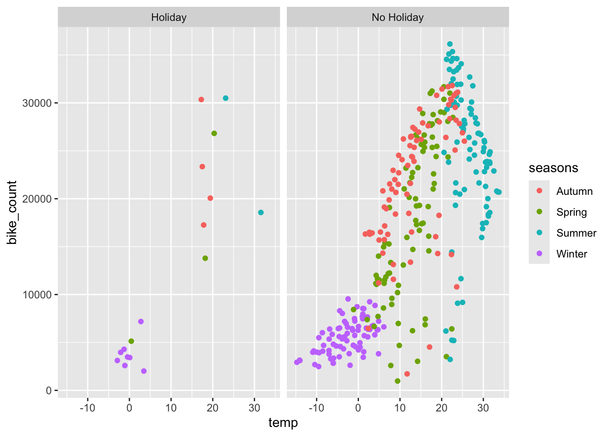
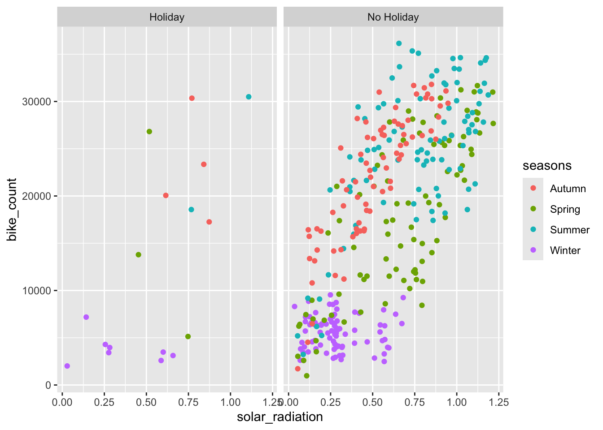
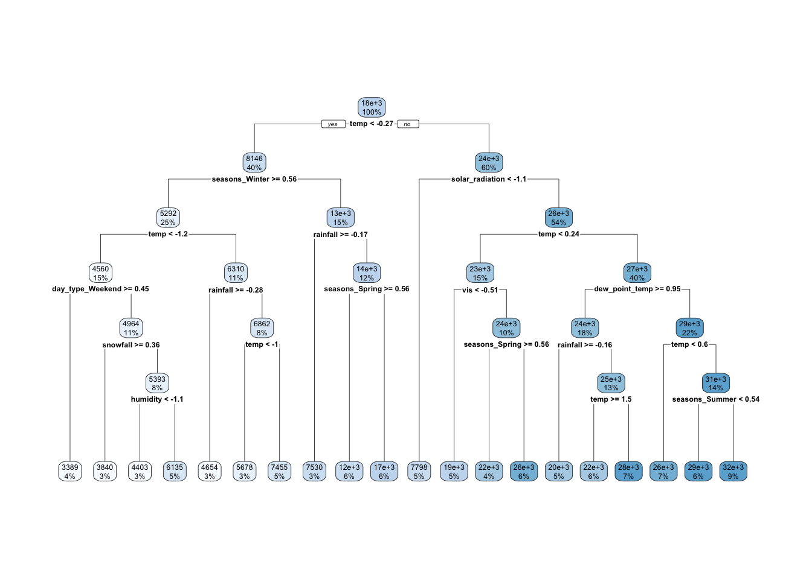

1 + 1[1] 2Quarto enables you to weave together content and executable code into a finished document. To learn more about Quarto see https://quarto.org.
When you click the Render button a document will be generated that includes both content and the output of embedded code. You can embed code like this:
1 + 1[1] 2You can add options to executable code like this
[1] 4The echo: false option disables the printing of code (only output is displayed).
#install.packages("tree")
#install.packages("rpart.plot")
#install.packages("baguette")
#install.packages("ranger")
#install.packages("vip")
#install.packages("parsnip")
library(tidyverse)── Attaching core tidyverse packages ──────────────────────── tidyverse 2.0.0 ──
✔ dplyr 1.1.4 ✔ readr 2.1.5
✔ forcats 1.0.0 ✔ stringr 1.5.1
✔ ggplot2 3.5.1 ✔ tibble 3.2.1
✔ lubridate 1.9.3 ✔ tidyr 1.3.1
✔ purrr 1.0.2
── Conflicts ────────────────────────────────────────── tidyverse_conflicts() ──
✖ dplyr::filter() masks stats::filter()
✖ dplyr::lag() masks stats::lag()
ℹ Use the conflicted package (<http://conflicted.r-lib.org/>) to force all conflicts to become errorslibrary(tidymodels)── Attaching packages ────────────────────────────────────── tidymodels 1.2.0 ──
✔ broom 1.0.6 ✔ rsample 1.2.1
✔ dials 1.3.0 ✔ tune 1.2.1
✔ infer 1.0.7 ✔ workflows 1.1.4
✔ modeldata 1.4.0 ✔ workflowsets 1.1.0
✔ parsnip 1.2.1 ✔ yardstick 1.3.1
✔ recipes 1.1.0
── Conflicts ───────────────────────────────────────── tidymodels_conflicts() ──
✖ scales::discard() masks purrr::discard()
✖ dplyr::filter() masks stats::filter()
✖ recipes::fixed() masks stringr::fixed()
✖ dplyr::lag() masks stats::lag()
✖ yardstick::spec() masks readr::spec()
✖ recipes::step() masks stats::step()
• Search for functions across packages at https://www.tidymodels.org/find/library(readr)
library(lubridate)
library(baguette)
library(rpart.plot)Loading required package: rpart
Attaching package: 'rpart'
The following object is masked from 'package:dials':
prunelibrary(rpart)
library(tree)
library(ranger)Warning: package 'ranger' was built under R version 4.4.1library("vip")
Attaching package: 'vip'
The following object is masked from 'package:utils':
vilibrary("parsnip")bike_data <- read_csv("https://www4.stat.ncsu.edu/~online/datasets/SeoulBikeData.csv",local = locale(encoding = "latin1"))Rows: 8760 Columns: 14
── Column specification ────────────────────────────────────────────────────────
Delimiter: ","
chr (4): Date, Seasons, Holiday, Functioning Day
dbl (10): Rented Bike Count, Hour, Temperature(°C), Humidity(%), Wind speed ...
ℹ Use `spec()` to retrieve the full column specification for this data.
ℹ Specify the column types or set `show_col_types = FALSE` to quiet this message.bike_data# A tibble: 8,760 × 14
Date `Rented Bike Count` Hour `Temperature(°C)` `Humidity(%)`
<chr> <dbl> <dbl> <dbl> <dbl>
1 01/12/2017 254 0 -5.2 37
2 01/12/2017 204 1 -5.5 38
3 01/12/2017 173 2 -6 39
4 01/12/2017 107 3 -6.2 40
5 01/12/2017 78 4 -6 36
6 01/12/2017 100 5 -6.4 37
7 01/12/2017 181 6 -6.6 35
8 01/12/2017 460 7 -7.4 38
9 01/12/2017 930 8 -7.6 37
10 01/12/2017 490 9 -6.5 27
# ℹ 8,750 more rows
# ℹ 9 more variables: `Wind speed (m/s)` <dbl>, `Visibility (10m)` <dbl>,
# `Dew point temperature(°C)` <dbl>, `Solar Radiation (MJ/m2)` <dbl>,
# `Rainfall(mm)` <dbl>, `Snowfall (cm)` <dbl>, Seasons <chr>, Holiday <chr>,
# `Functioning Day` <chr> bike_data |>
is.na() |>
colSums() Date Rented Bike Count Hour
0 0 0
Temperature(°C) Humidity(%) Wind speed (m/s)
0 0 0
Visibility (10m) Dew point temperature(°C) Solar Radiation (MJ/m2)
0 0 0
Rainfall(mm) Snowfall (cm) Seasons
0 0 0
Holiday Functioning Day
0 0 attributes(bike_data)$speccols(
Date = col_character(),
`Rented Bike Count` = col_double(),
Hour = col_double(),
`Temperature(°C)` = col_double(),
`Humidity(%)` = col_double(),
`Wind speed (m/s)` = col_double(),
`Visibility (10m)` = col_double(),
`Dew point temperature(°C)` = col_double(),
`Solar Radiation (MJ/m2)` = col_double(),
`Rainfall(mm)` = col_double(),
`Snowfall (cm)` = col_double(),
Seasons = col_character(),
Holiday = col_character(),
`Functioning Day` = col_character()
)# Change date column
bike_data <- bike_data |>
mutate(date = dmy(Date)) |>
select(-Date)summary(bike_data) Rented Bike Count Hour Temperature(°C) Humidity(%)
Min. : 0.0 Min. : 0.00 Min. :-17.80 Min. : 0.00
1st Qu.: 191.0 1st Qu.: 5.75 1st Qu.: 3.50 1st Qu.:42.00
Median : 504.5 Median :11.50 Median : 13.70 Median :57.00
Mean : 704.6 Mean :11.50 Mean : 12.88 Mean :58.23
3rd Qu.:1065.2 3rd Qu.:17.25 3rd Qu.: 22.50 3rd Qu.:74.00
Max. :3556.0 Max. :23.00 Max. : 39.40 Max. :98.00
Wind speed (m/s) Visibility (10m) Dew point temperature(°C)
Min. :0.000 Min. : 27 Min. :-30.600
1st Qu.:0.900 1st Qu.: 940 1st Qu.: -4.700
Median :1.500 Median :1698 Median : 5.100
Mean :1.725 Mean :1437 Mean : 4.074
3rd Qu.:2.300 3rd Qu.:2000 3rd Qu.: 14.800
Max. :7.400 Max. :2000 Max. : 27.200
Solar Radiation (MJ/m2) Rainfall(mm) Snowfall (cm) Seasons
Min. :0.0000 Min. : 0.0000 Min. :0.00000 Length:8760
1st Qu.:0.0000 1st Qu.: 0.0000 1st Qu.:0.00000 Class :character
Median :0.0100 Median : 0.0000 Median :0.00000 Mode :character
Mean :0.5691 Mean : 0.1487 Mean :0.07507
3rd Qu.:0.9300 3rd Qu.: 0.0000 3rd Qu.:0.00000
Max. :3.5200 Max. :35.0000 Max. :8.80000
Holiday Functioning Day date
Length:8760 Length:8760 Min. :2017-12-01
Class :character Class :character 1st Qu.:2018-03-02
Mode :character Mode :character Median :2018-06-01
Mean :2018-06-01
3rd Qu.:2018-08-31
Max. :2018-11-30 print(bike_data$Seasons |>
unique())[1] "Winter" "Spring" "Summer" "Autumn"bike_data$Holiday |>
unique()[1] "No Holiday" "Holiday" bike_data$`Functioning Day` |>
unique()[1] "Yes" "No" bike_data <- bike_data |>
mutate(seasons = factor(Seasons),
holiday = factor(Holiday),
fn_day = factor(`Functioning Day`)) |>
select(-Seasons, -Holiday, - `Functioning Day`)bike_data <- bike_data |> rename('bike_count' = `Rented Bike Count`,
'hour' = "Hour",
"temp" = `Temperature(°C)`,
"wind_speed" = `Wind speed (m/s)`,
"humidity" = `Humidity(%)`,
"vis" = `Visibility (10m)`,
"dew_point_temp" = `Dew point temperature(°C)`,
"solar_radiation" = `Solar Radiation (MJ/m2)`,
"rainfall" = "Rainfall(mm)",
"snowfall" = `Snowfall (cm)`)bike_data <- bike_data |>
filter(fn_day == "Yes") |>
select(-fn_day)bike_data <- bike_data |>
group_by(date, seasons, holiday) |>
summarize(bike_count = sum(bike_count),
temp = mean(temp),
humidity = mean(humidity),
wind_speed = mean(wind_speed),
vis = mean(vis),
dew_point_temp = mean(dew_point_temp),
solar_radiation = mean(solar_radiation),
rainfall = sum(rainfall),
snowfall = sum(snowfall))|>
ungroup()`summarise()` has grouped output by 'date', 'seasons'. You can override using
the `.groups` argument.bike_data# A tibble: 353 × 12
date seasons holiday bike_count temp humidity wind_speed vis
<date> <fct> <fct> <dbl> <dbl> <dbl> <dbl> <dbl>
1 2017-12-01 Winter No Holiday 9539 -2.45 45.9 1.54 1871.
2 2017-12-02 Winter No Holiday 8523 1.33 62.0 1.71 1471.
3 2017-12-03 Winter No Holiday 7222 4.88 81.5 1.61 456.
4 2017-12-04 Winter No Holiday 8729 -0.304 52.5 3.45 1363.
5 2017-12-05 Winter No Holiday 8307 -4.46 36.4 1.11 1959.
6 2017-12-06 Winter No Holiday 6669 0.0458 70.8 0.696 1187.
7 2017-12-07 Winter No Holiday 8549 1.09 67.5 1.69 949.
8 2017-12-08 Winter No Holiday 8032 -3.82 41.8 1.85 1872.
9 2017-12-09 Winter No Holiday 7233 -0.846 46 1.08 1861.
10 2017-12-10 Winter No Holiday 3453 1.19 69.7 2.00 1043.
# ℹ 343 more rows
# ℹ 4 more variables: dew_point_temp <dbl>, solar_radiation <dbl>,
# rainfall <dbl>, snowfall <dbl>Summary Stats & Graphs
bike_data |>
summarize(across('bike_count',
.fns = c("mean "= mean,
"median" = median,
"sd" = sd,
"IQR" = IQR,
"min" = min,
"max" = max),
.names = "{.col}_{.fn}"))# A tibble: 1 × 6
`bike_count_mean ` bike_count_median bike_count_sd bike_count_IQR
<dbl> <dbl> <dbl> <dbl>
1 17485. 18563 9937. 19318
# ℹ 2 more variables: bike_count_min <dbl>, bike_count_max <dbl>bike_data |>
group_by(holiday)|>
summarize(across('bike_count',
.fns = c("mean "= mean,
"median" = median,
"sd" = sd,
"IQR" = IQR,
"min" = min,
"max" = max),
.names = "{.col}_{.fn}"))# A tibble: 2 × 7
holiday `bike_count_mean ` bike_count_median bike_count_sd bike_count_IQR
<fct> <dbl> <dbl> <dbl> <dbl>
1 Holiday 12700. 7184 10504. 16576
2 No Holiday 17727. 19104. 9862. 19168.
# ℹ 2 more variables: bike_count_min <dbl>, bike_count_max <dbl>bike_data |>
group_by(seasons)|>
summarize(across('bike_count',
.fns = c("mean "= mean,
"median" = median,
"sd" = sd,
"IQR" = IQR,
"min" = min,
"max" = max),
.names = "{.col}_{.fn}"))# A tibble: 4 × 7
seasons `bike_count_mean ` bike_count_median bike_count_sd bike_count_IQR
<fct> <dbl> <dbl> <dbl> <dbl>
1 Autumn 22099. 23350 6711. 10733
2 Spring 17910. 17590 8357. 14362.
3 Summer 24818. 25572. 7297. 9308.
4 Winter 5413. 5498 1808. 2634.
# ℹ 2 more variables: bike_count_min <dbl>, bike_count_max <dbl>bike_data |>
group_by(seasons,holiday) |>
summarize(across('bike_count',
.fns = c("mean "= mean,
"median" = median,
"sd" = sd,
"IQR" = IQR,
"min" = min,
"max" = max),
.names = "{.col}_{.fn}"))`summarise()` has grouped output by 'seasons'. You can override using the
`.groups` argument.# A tibble: 8 × 8
# Groups: seasons [4]
seasons holiday `bike_count_mean ` bike_count_median bike_count_sd
<fct> <fct> <dbl> <dbl> <dbl>
1 Autumn Holiday 22754. 21705 5642.
2 Autumn No Holiday 22065. 23472 6792.
3 Spring Holiday 15247. 13790 10917.
4 Spring No Holiday 18002. 17730 8322.
5 Summer Holiday 24532. 24532. 8438.
6 Summer No Holiday 24824. 25572. 7324.
7 Winter Holiday 3759 3454. 1561.
8 Winter No Holiday 5574. 5609 1757.
# ℹ 3 more variables: bike_count_IQR <dbl>, bike_count_min <dbl>,
# bike_count_max <dbl>bike_data |>
select(where(is.numeric)) |>
cor() |>
round(3) bike_count temp humidity wind_speed vis dew_point_temp
bike_count 1.000 0.753 0.036 -0.193 0.166 0.650
temp 0.753 1.000 0.404 -0.261 0.002 0.963
humidity 0.036 0.404 1.000 -0.234 -0.559 0.632
wind_speed -0.193 -0.261 -0.234 1.000 0.206 -0.288
vis 0.166 0.002 -0.559 0.206 1.000 -0.154
dew_point_temp 0.650 0.963 0.632 -0.288 -0.154 1.000
solar_radiation 0.736 0.550 -0.274 0.096 0.271 0.383
rainfall -0.239 0.145 0.529 -0.102 -0.222 0.265
snowfall -0.265 -0.267 0.065 0.021 -0.102 -0.210
solar_radiation rainfall snowfall
bike_count 0.736 -0.239 -0.265
temp 0.550 0.145 -0.267
humidity -0.274 0.529 0.065
wind_speed 0.096 -0.102 0.021
vis 0.271 -0.222 -0.102
dew_point_temp 0.383 0.265 -0.210
solar_radiation 1.000 -0.323 -0.233
rainfall -0.323 1.000 -0.023
snowfall -0.233 -0.023 1.000ggplot(bike_data, aes(x = temp, y = bike_count)) +
geom_jitter(aes(color = seasons)) +
facet_grid(~holiday)
ggplot(bike_data, aes(x = solar_radiation, y = bike_count)) +
geom_jitter(aes(color = seasons)) +
facet_grid(~holiday)
set.seed(23)
bike_split <- initial_split(bike_data, prop = 0.75, strata = seasons)
bike_train <- training(bike_split)
bike_test <- testing(bike_split)
bike_10_fold <- vfold_cv(bike_train, 10)MLR_rec1 <- recipe(bike_count ~., data = bike_train) |>
step_date(date, features = "dow") |>
step_mutate(day_type = factor(if_else(date_dow %in% c("Sat", "Sun"), "Weekend", "Weekday"))) |>
step_rm(date, date_dow) |>
step_dummy(seasons, holiday, day_type) |>
step_normalize(all_numeric(), -bike_count)MLR_rec2 <- MLR_rec1 |>
step_interact(terms = ~starts_with("seasons")*starts_with("holiday") +
starts_with("seasons")*temp +
temp*rainfall)MLR_rec3 <- MLR_rec2 |>
step_poly(temp,
wind_speed,
vis,
dew_point_temp,
solar_radiation,
rainfall,
snowfall,
degree = 2)
#MLR_rec3MLR_spec <- linear_reg() |>
set_engine("lm")MLR_CV_fit1 <- workflow() |>
add_recipe(MLR_rec1) |>
add_model(MLR_spec) |>
fit_resamples(bike_10_fold)MLR_CV_fit2 <- workflow() |>
add_recipe(MLR_rec2) |>
add_model(MLR_spec) |>
fit_resamples(bike_10_fold)→ A | warning: prediction from rank-deficient fit; consider predict(., rankdeficient="NA")There were issues with some computations A: x1
There were issues with some computations A: x1MLR_CV_fit3 <- workflow() |>
add_recipe(MLR_rec3) |>
add_model(MLR_spec) |>
fit_resamples(bike_10_fold)→ A | warning: prediction from rank-deficient fit; consider predict(., rankdeficient="NA")rbind(MLR_CV_fit1 |> collect_metrics(),
MLR_CV_fit2 |> collect_metrics(),
MLR_CV_fit3 |> collect_metrics())# A tibble: 6 × 6
.metric .estimator mean n std_err .config
<chr> <chr> <dbl> <int> <dbl> <chr>
1 rmse standard 4173. 10 147. Preprocessor1_Model1
2 rsq standard 0.838 10 0.0156 Preprocessor1_Model1
3 rmse standard 2831. 10 138. Preprocessor1_Model1
4 rsq standard 0.921 10 0.00725 Preprocessor1_Model1
5 rmse standard 2750. 10 143. Preprocessor1_Model1
6 rsq standard 0.923 10 0.00863 Preprocessor1_Model1rbind(MLR_CV_fit1 |> collect_metrics() |> filter(.metric == "rmse"),
MLR_CV_fit2 |> collect_metrics() |> filter(.metric == "rmse"),
MLR_CV_fit3 |> collect_metrics() |> filter(.metric == "rmse")) |>
mutate(Model = c("Model1 ", "Model 2", "Model 3")) |>
select(Model, mean, n, std_err)# A tibble: 3 × 4
Model mean n std_err
<chr> <dbl> <int> <dbl>
1 "Model1 " 4173. 10 147.
2 "Model 2" 2831. 10 138.
3 "Model 3" 2750. 10 143.final_fit <- workflow() |>
add_recipe(MLR_rec1) |>
add_model(MLR_spec) |>
last_fit(bike_split)final_fit |>
collect_metrics()# A tibble: 2 × 4
.metric .estimator .estimate .config
<chr> <chr> <dbl> <chr>
1 rmse standard 3847. Preprocessor1_Model1
2 rsq standard 0.840 Preprocessor1_Model1final_fit |>
extract_fit_parsnip() |>
tidy()# A tibble: 14 × 5
term estimate std.error statistic p.value
<chr> <dbl> <dbl> <dbl> <dbl>
1 (Intercept) 17670. 256. 69.1 1.60e-164
2 temp -3580. 4750. -0.754 4.52e- 1
3 humidity -2496. 1831. -1.36 1.74e- 1
4 wind_speed -889. 308. -2.89 4.26e- 3
5 vis -314. 373. -0.843 4.00e- 1
6 dew_point_temp 8370. 5575. 1.50 1.35e- 1
7 solar_radiation 3879. 468. 8.28 7.45e- 15
8 rainfall -2038. 345. -5.90 1.16e- 8
9 snowfall -312. 276. -1.13 2.60e- 1
10 seasons_Spring -2337. 372. -6.27 1.54e- 9
11 seasons_Summer -1409. 448. -3.14 1.87e- 3
12 seasons_Winter -3865. 495. -7.80 1.65e- 13
13 holiday_No.Holiday 686. 262. 2.62 9.38e- 3
14 day_type_Weekend -936. 260. -3.60 3.79e- 4*Create a Model instance with tune()
LASSO_spec <- linear_reg(penalty = tune(), mixture = 1) |>
set_engine("glmnet")LASSO_wkf <- workflow() |>
add_recipe(MLR_rec1) |>
add_model(LASSO_spec)
LASSO_wkf══ Workflow ════════════════════════════════════════════════════════════════════
Preprocessor: Recipe
Model: linear_reg()
── Preprocessor ────────────────────────────────────────────────────────────────
5 Recipe Steps
• step_date()
• step_mutate()
• step_rm()
• step_dummy()
• step_normalize()
── Model ───────────────────────────────────────────────────────────────────────
Linear Regression Model Specification (regression)
Main Arguments:
penalty = tune()
mixture = 1
Computational engine: glmnet *n Fit the model with tune_grid and grid_regular
LASSO_grid <- LASSO_wkf |>
tune_grid(resamples = bike_10_fold,
grid = grid_regular(penalty(), levels = 200))
LASSO_grid# Tuning results
# 10-fold cross-validation
# A tibble: 10 × 4
splits id .metrics .notes
<list> <chr> <list> <list>
1 <split [236/27]> Fold01 <tibble [400 × 5]> <tibble [0 × 3]>
2 <split [236/27]> Fold02 <tibble [400 × 5]> <tibble [0 × 3]>
3 <split [236/27]> Fold03 <tibble [400 × 5]> <tibble [0 × 3]>
4 <split [237/26]> Fold04 <tibble [400 × 5]> <tibble [0 × 3]>
5 <split [237/26]> Fold05 <tibble [400 × 5]> <tibble [0 × 3]>
6 <split [237/26]> Fold06 <tibble [400 × 5]> <tibble [0 × 3]>
7 <split [237/26]> Fold07 <tibble [400 × 5]> <tibble [0 × 3]>
8 <split [237/26]> Fold08 <tibble [400 × 5]> <tibble [0 × 3]>
9 <split [237/26]> Fold09 <tibble [400 × 5]> <tibble [0 × 3]>
10 <split [237/26]> Fold10 <tibble [400 × 5]> <tibble [0 × 3]>LASSO_grid[1, ".metrics"][[1]][[1]]
# A tibble: 400 × 5
penalty .metric .estimator .estimate .config
<dbl> <chr> <chr> <dbl> <chr>
1 1 e-10 rmse standard 3431. Preprocessor1_Model001
2 1.12e-10 rmse standard 3431. Preprocessor1_Model002
3 1.26e-10 rmse standard 3431. Preprocessor1_Model003
4 1.41e-10 rmse standard 3431. Preprocessor1_Model004
5 1.59e-10 rmse standard 3431. Preprocessor1_Model005
6 1.78e-10 rmse standard 3431. Preprocessor1_Model006
7 2.00e-10 rmse standard 3431. Preprocessor1_Model007
8 2.25e-10 rmse standard 3431. Preprocessor1_Model008
9 2.52e-10 rmse standard 3431. Preprocessor1_Model009
10 2.83e-10 rmse standard 3431. Preprocessor1_Model010
# ℹ 390 more rowsLASSO_grid |>
collect_metrics() |>
filter(.metric == "rmse")# A tibble: 200 × 7
penalty .metric .estimator mean n std_err .config
<dbl> <chr> <chr> <dbl> <int> <dbl> <chr>
1 1 e-10 rmse standard 4171. 10 140. Preprocessor1_Model001
2 1.12e-10 rmse standard 4171. 10 140. Preprocessor1_Model002
3 1.26e-10 rmse standard 4171. 10 140. Preprocessor1_Model003
4 1.41e-10 rmse standard 4171. 10 140. Preprocessor1_Model004
5 1.59e-10 rmse standard 4171. 10 140. Preprocessor1_Model005
6 1.78e-10 rmse standard 4171. 10 140. Preprocessor1_Model006
7 2.00e-10 rmse standard 4171. 10 140. Preprocessor1_Model007
8 2.25e-10 rmse standard 4171. 10 140. Preprocessor1_Model008
9 2.52e-10 rmse standard 4171. 10 140. Preprocessor1_Model009
10 2.83e-10 rmse standard 4171. 10 140. Preprocessor1_Model010
# ℹ 190 more rowslowest_rmse <- LASSO_grid |>
select_best(metric = "rmse")
lowest_rmse# A tibble: 1 × 2
penalty .config
<dbl> <chr>
1 0.0000000001 Preprocessor1_Model001LASSO_final <- LASSO_wkf |>
finalize_workflow(lowest_rmse) |>
fit(bike_train)
tidy(LASSO_final)# A tibble: 14 × 3
term estimate penalty
<chr> <dbl> <dbl>
1 (Intercept) 17670. 0.0000000001
2 temp 0 0.0000000001
3 humidity -1098. 0.0000000001
4 wind_speed -889. 0.0000000001
5 vis -214. 0.0000000001
6 dew_point_temp 4083. 0.0000000001
7 solar_radiation 3849. 0.0000000001
8 rainfall -2141. 0.0000000001
9 snowfall -335. 0.0000000001
10 seasons_Spring -2290. 0.0000000001
11 seasons_Summer -1328. 0.0000000001
12 seasons_Winter -3809. 0.0000000001
13 holiday_No.Holiday 686. 0.0000000001
14 day_type_Weekend -949. 0.0000000001# LASSO_final |>
# extract_fit_parsnip() |>
# tidy()tree_mod <- decision_tree(tree_depth = tune(),
min_n = tune(),
cost_complexity = tune()) |>
set_engine("rpart") |>
set_mode("regression")tree_wkf <- workflow() |>
add_recipe(MLR_rec1) |>
add_model(tree_mod)
#tree_wkftree_grid <- grid_regular(cost_complexity(),
tree_depth(range = c(2,10)),
min_n(range = c(5,20)),
levels = 5)tree_tune <- tree_wkf |>
tune_grid(
resamples = bike_10_fold,
grid = tree_grid,
metrics = metric_set(rmse, mae)
)
#tree_tune#prep(MLR_rec1) |> bake(new_data = bike_train)best_tree <- tree_tune |>
select_best(metric = "rmse")
#tree_best_params <- select_best(tree_tune, metric = "rmse")
best_tree# A tibble: 1 × 4
cost_complexity tree_depth min_n .config
<dbl> <int> <int> <chr>
1 0.0000000001 6 20 Preprocessor1_Model111final_tree_wkf <- tree_wkf |>
finalize_workflow(best_tree)
# Fit final mode on the training set
tree_fit <- final_tree_wkf|>
fit(data = bike_train)Evaluate Model Performance on the Test Set
# Predict on the test set
tree_test_results <- tree_fit %>%
predict(new_data = bike_test) %>%
bind_cols(bike_test) %>%
metrics(truth = bike_count, estimate = .pred)
tree_test_results# A tibble: 3 × 3
.metric .estimator .estimate
<chr> <chr> <dbl>
1 rmse standard 3410.
2 rsq standard 0.874
3 mae standard 2420. library(rpart.plot)
# # Visualize the regression tree
# tree_fit %>%
# extract_fit_parsnip() %>%
# rpart.plot::rpart.plot()bagged_tree <- bag_tree(tree_depth = tune(),
min_n = tune()) |>
set_engine("rpart") %>%
set_mode("regression")bag_wkf <- workflow() |>
add_recipe(MLR_rec1) |>
add_model(bagged_tree)# Tune Bagged Tree
# Define the tuning grid
bagged_tree_grid <- grid_regular(
tree_depth(range = c(2, 10)),
min_n(range = c(5, 20)),
levels = 5
)Cross-Validation for Hyperparameter Tuning
# Select Best Bagged Tree Model
#best_bagged <- bagged_tune |> select_best(metric = "rmse")# Perform cross-validation tuning
bagged_tree_tune <- bag_wkf |>
tune_grid(
resamples = bike_10_fold, # Cross-validation folds
grid = bagged_tree_grid, # Hyperparameter grid
metrics = metric_set(rmse, mae) # Evaluation metrics
)Select the best model
# Select the best hyperparameters based on RMSE
best_bagged_tree <- bagged_tree_tune |>
select_best(metric = "rmse")
best_bagged_tree# A tibble: 1 × 3
tree_depth min_n .config
<int> <int> <chr>
1 10 8 Preprocessor1_Model10Fit the model
# Finalize the workflow with the best parameters
bagged_tree_fit <- bag_wkf |>
finalize_workflow(best_bagged_tree) |>
fit(data = bike_train)Evaluate on Test data
# Make predictions on the test set
bagged_tree_preds <- predict(bagged_tree_fit, new_data = bike_test) |>
bind_cols(bike_test)
# Evaluate model performance
bagged_tree_metrics <- bagged_tree_preds |>
metrics(truth = bike_count, estimate = .pred)
bagged_tree_metrics# A tibble: 3 × 3
.metric .estimator .estimate
<chr> <chr> <dbl>
1 rmse standard 3049.
2 rsq standard 0.897
3 mae standard 2194. # #install.packages("vip")
# library(vip)
# bagged_fit |>
# extract_fit_parsnip() |>
# vip::vip()# bag_final_model <- extract_fit_engine(bagged_fit)
# bag_final_model$imp |>
# mutate(term = factor(term, levels = term)) |>
# ggplot(aes(x = term, y = value)) +
# geom_bar(stat ="identity") +
# coord_flip()rf_spec <- rand_forest(
mtry = tune(),
trees = 500,
min_n = tune()
) |>
set_engine("ranger") |>
set_mode("regression")Workflow
rf_wkf <- workflow() |>
add_recipe(MLR_rec1) |>
add_model(rf_spec)Hyperparameter Grid
# Define the Grid for Tuning
rf_grid <- grid_regular(
mtry(range = c(1, ncol(bike_train) - 1)),
min_n(range = c(2, 10)),
levels = 5
)Cross-Validation
# Tune the Random Forest Model
rf_tune <- rf_wkf |>
tune_grid(
resamples = bike_10_fold,
grid = rf_grid,
metrics = metric_set(rmse, mae)
)Best Hyperparameter
best_rf <- rf_tune |>
select_best(metric = "rmse")
# View the Best Parameters
print(best_rf)# A tibble: 1 × 3
mtry min_n .config
<int> <int> <chr>
1 6 2 Preprocessor1_Model03workflow and fit on Training data
# Finalize Workflow with Best Parameters
rf_fit <- rf_wkf |>
finalize_workflow(best_rf) |>
fit(data = bike_train)Model on the Test Set
# Make Predictions on Test Set
rf_preds <- predict(rf_fit, new_data = bike_test) |>
bind_cols(bike_test)
# Evaluate Model Performance
rf_metrics <- rf_preds |>
metrics(truth = bike_count, estimate = .pred) # Replace 'Rental_Count' with your target variable
# View the Metrics
print(rf_metrics)# A tibble: 3 × 3
.metric .estimator .estimate
<chr> <chr> <dbl>
1 rmse standard 2925.
2 rsq standard 0.905
3 mae standard 2197. ##Model Comparisons on Test Set
# LASSO model performance
lasso_preds <- predict(LASSO_final, new_data = bike_test) |>
bind_cols(bike_test) |>
metrics(truth = bike_count, estimate = .pred)# MLR model performance
# Extract the workflow from the last_fit result
final_fit_workflow <- extract_workflow(final_fit)
# Make predictions on the test set using the extracted workflow
mlr_preds <- predict(final_fit_workflow, new_data = bike_test) |>
bind_cols(bike_test) |>
metrics(truth = bike_count, estimate = .pred)
mlr_preds# A tibble: 3 × 3
.metric .estimator .estimate
<chr> <chr> <dbl>
1 rmse standard 3847.
2 rsq standard 0.840
3 mae standard 2996. # Regression Tree model performance
tree_preds <- predict(tree_fit, new_data = bike_test) |>
bind_cols(bike_test) |>
metrics(truth = bike_count, estimate = .pred)# Bagged Tree model performance
bagged_tree_preds <- predict(bagged_tree_fit, new_data = bike_test) |>
bind_cols(bike_test) |>
metrics(truth = bike_count, estimate = .pred)# Random Forest model performance
rf_preds <- predict(rf_fit, new_data = bike_test) |>
bind_cols(bike_test) |>
metrics(truth = bike_count, estimate = .pred)# Combine all metrics
model_comparison <- bind_rows(
lasso_preds |> mutate(Model = "LASSO"),
mlr_preds |> mutate(Model = "MLR"),
tree_preds |> mutate(Model = "Regression Tree"),
bagged_tree_preds |> mutate(Model = "Bagged Tree"),
rf_preds |> mutate(Model = "Random Forest")
)
model_comparison# A tibble: 15 × 4
.metric .estimator .estimate Model
<chr> <chr> <dbl> <chr>
1 rmse standard 3863. LASSO
2 rsq standard 0.838 LASSO
3 mae standard 3008. LASSO
4 rmse standard 3847. MLR
5 rsq standard 0.840 MLR
6 mae standard 2996. MLR
7 rmse standard 3410. Regression Tree
8 rsq standard 0.874 Regression Tree
9 mae standard 2420. Regression Tree
10 rmse standard 3049. Bagged Tree
11 rsq standard 0.897 Bagged Tree
12 mae standard 2194. Bagged Tree
13 rmse standard 2925. Random Forest
14 rsq standard 0.905 Random Forest
15 mae standard 2197. Random Forest model_comparison |>
filter(.metric == "rmse") |>
select(Model, .estimate) |>
arrange(.estimate)# A tibble: 5 × 2
Model .estimate
<chr> <dbl>
1 Random Forest 2925.
2 Bagged Tree 3049.
3 Regression Tree 3410.
4 MLR 3847.
5 LASSO 3863.MLR and LASSO model for final coefficient
# MLR model final coefficients
final_fit |>
extract_fit_parsnip() |>
tidy()# A tibble: 14 × 5
term estimate std.error statistic p.value
<chr> <dbl> <dbl> <dbl> <dbl>
1 (Intercept) 17670. 256. 69.1 1.60e-164
2 temp -3580. 4750. -0.754 4.52e- 1
3 humidity -2496. 1831. -1.36 1.74e- 1
4 wind_speed -889. 308. -2.89 4.26e- 3
5 vis -314. 373. -0.843 4.00e- 1
6 dew_point_temp 8370. 5575. 1.50 1.35e- 1
7 solar_radiation 3879. 468. 8.28 7.45e- 15
8 rainfall -2038. 345. -5.90 1.16e- 8
9 snowfall -312. 276. -1.13 2.60e- 1
10 seasons_Spring -2337. 372. -6.27 1.54e- 9
11 seasons_Summer -1409. 448. -3.14 1.87e- 3
12 seasons_Winter -3865. 495. -7.80 1.65e- 13
13 holiday_No.Holiday 686. 262. 2.62 9.38e- 3
14 day_type_Weekend -936. 260. -3.60 3.79e- 4# LASSO model final coefficients
LASSO_final |>
extract_fit_parsnip() |>
tidy()# A tibble: 14 × 3
term estimate penalty
<chr> <dbl> <dbl>
1 (Intercept) 17670. 0.0000000001
2 temp 0 0.0000000001
3 humidity -1098. 0.0000000001
4 wind_speed -889. 0.0000000001
5 vis -214. 0.0000000001
6 dew_point_temp 4083. 0.0000000001
7 solar_radiation 3849. 0.0000000001
8 rainfall -2141. 0.0000000001
9 snowfall -335. 0.0000000001
10 seasons_Spring -2290. 0.0000000001
11 seasons_Summer -1328. 0.0000000001
12 seasons_Winter -3809. 0.0000000001
13 holiday_No.Holiday 686. 0.0000000001
14 day_type_Weekend -949. 0.0000000001Regression Tree Model: Plot the final fit
# Plot the final regression tree
# Extract the fitted model from the parsnip workflow
rpart_model <- tree_fit |>
extract_fit_parsnip()
# Plot the regression tree
par(mar = c(5, 4, 4, 2))
rpart.plot::rpart.plot(rpart_model$fit, roundint = FALSE)
Bagged Tree and Random Forest Models: Produce variable importance plots
# Bagged Tree variable importance plot
rpart_model <- bagged_tree_fit$fit
rpart_model$variable.importance # Variable importance for rpart-based modelsNULL# Random Forest variable importance plot
#install.packages("workflows")
# rf_fit %>%
# extract_fit_parsnip() %>%
# vip::vip()Best Model, Fit it to the Entire Dataset
# Example: Refit the Random Forest (assuming it was the best based on the test set performance)
# final_rf_fit <- rf_wkf %>%
# finalize_workflow(best_rf) %>%
# fit(data = bike_data)
#
# # Check the final model performance on the full dataset
# final_rf_fit